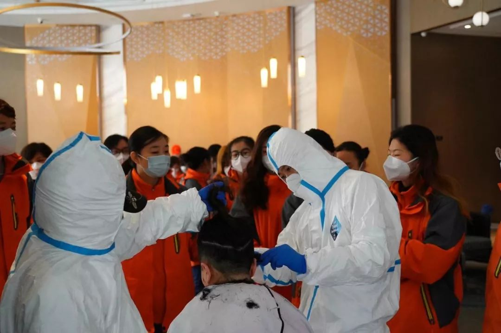

疫情时期的怕与爱：“封城”20天的江城面孔
原文链接 备份链接 *************▲*************2020年2月8日，武汉中心医院后湖院区外墙上贴着李文亮的照片，地上摆满人们送来的鲜花。 （受访者供图/图） 全文共6660字，阅读大约需要14分钟。 “我觉得 …
 2月11日，一名患者从武汉方舱医院出院。中青报·中青网见习记者鲁冲/摄
2月11日，一名患者从武汉方舱医院出院。中青报·中青网见习记者鲁冲/摄
本文约8842字
预计阅读时间23分钟
采访 | 王梦影 杨 杰 魏 晞 秦珍子 马宇平
主笔 | 张 国
此时此刻，武汉是全球大都市中引人瞩目同时异常安静的一个。天色刚暗，走在马路上就能听到自己脚步的回声。为了控制新型冠状病毒感染的肺炎疫情，当地1月23日采取了前所未有的“封城”措施，市长称仍有900多万人生活在这里。但空旷的街道上最常见的只有外卖骑手和环卫工，很多时候，骑手胡宾穿梭在钢筋水泥森林中会产生错觉，以为这座城市只剩下自己一个人了。一位每天扫街的环卫工则迎来了他职业生涯里的小小奇观：街道上如今连一个烟头都难以见到。
现在，监狱称得上是这个城市里的安全堡垒。随着疫情升级，监狱升级了封闭管理举措，宣布谢绝家属探视。这是明智之举，隔绝与外界接触的机会就是阻隔病毒。
自1月29日起，为了减少人员聚集，连法院的诉讼都暂停了。人类内部那些无休止的争执、敌视，暂时在共同的敌人面前搁置了起来。
胡宾喜欢骑着电瓶车在武汉的大街小巷里穿行，他习惯了每天无数次与行人擦身而过，在堵车的街道上、在素以“会飞”著称的武汉巴士之间寻找勉强通过的缝隙。他会从满是市井气的“过早”小店买回豆皮和热干面，穿过写字楼的自动门，送到装修考究的大厅。作为一个52岁的“老武汉”，他说这是他熟悉的武汉的样子——热闹、“发展快”，有时又有些拥挤。
“这些人都哪去了？他们怎么生活？”他忍不住去想。
繁忙的火车照旧穿过这个位于中国版图心脏部位的九省通衢之地。旅客们透过玻璃窗，见到的是一个从未见过的武汉：平日车流不息的高架路上，会突然出现行人和骑行者；一个天真的小男孩拿着玩具枪，追着前面正在快步疾行的妈妈开枪，“枪声”在街上回荡。他是整条街上最无所畏惧的人。
1
这个季节，穿城而过的长江清晨会笼起薄雾，轮船的汽笛声比以往更加清晰。入夜，江边的景观灯光准时亮起，不同的是，许多摩天大楼墙体广告都换成了闪光的“武汉加油”。
武汉无疑正在经历建城以来一段艰辛的日子，但它在竭力维持运转。一觉醒来，居民们会发现楼下塞得满满当当的垃圾桶，依然会被清空。洒水车每天都会响着熟悉的音乐驶过，最近水里掺入了消毒液。即使欠费，家里的自来水也不会中断，只是“氯味儿”比过去明显。电力公司说，武汉超过50万户居民欠了电费，但不会停电，水务公司也承诺“欠费不停水”。收听率最高的几个电台循环播放着防疫需知和心理节目，温婉的女声告诉听众要“正视压力、正视恐慌”。
1月下旬至2月上旬是武汉一年里最冷的时节。马路两侧的法国梧桐树满眼枯黄，黄叶缓缓落下但无人欣赏。一位姓李的环卫工负责一段大约300米长的街道。他只需抖一下手腕，落叶就会被扫进簸箕里。往常他会在手推车上挂一个编织袋，方便收集易拉罐、矿泉水瓶。现在，街道上连烟头都难以见到，他把手推车放到住处，编织袋换成了喷壶——垃圾桶的消毒比过去更为紧迫了。
老李负责的这段路本来被3个人“承包”，现在只剩下他一个人，为此他每天多拿30元补贴。疫情暴发前，武汉有数万名清洁工。很多人因为回家过年，结果被挡在城外。
这意味着留守的环卫工必须付出加倍努力。900万人以每天约8300吨的速度照常生产垃圾。如果没人处理，不到一个月，这些垃圾就能堆成一栋160米高的大楼。据武汉市城管委的说法，垃圾当中，居民日均丢弃的口罩有33万只。5600多个专用的垃圾箱被紧急配置在了居住区和超市，用来回收废弃口罩。一支由500多名环卫工组成的队伍，专门负责这些垃圾箱的清运。

1月29日，武汉市洪山区街头的环卫工人。中青报·中青网记者 李峥苨/摄
这座城市有超过8万个垃圾桶（箱）、220多座垃圾收集转运站，以及1700多间公共厕所。每天对这些地方消毒，需要消耗1.4万多升消毒液和1300多升洁厕灵。
在新冠肺炎定点医院武汉市红十字会医院，15名环卫工人在一份“请战书”上按下红色手印，进入严格警戒的“红区”，一天处理近1000套废弃的隔离衣和防护服。
每家定点医院都有“红区”。从襄阳赶到武汉的湖北中油优艺环保公司（以下简称湖北“中油”）员工王宁，每天带领一支12人的运输队去运走医疗垃圾，包括沾染飞沫的防护服、残留余液的输液管，还有感染者留下的卫生纸卷和粘着血迹的病号服。
在1月20日，国家卫生健康委高级别专家组组长钟南山首次对外宣布这种新型病毒可以“人传人”之前，医疗废物处理行业就进入了加班状态，因为医院接诊的肺炎病人明显增加了。
1月27日，湖北省生态环境厅在省内征集医疗废物运输车辆。总部位于襄阳的湖北中油响应号召，派出车队去了武汉。这样的支援此前罕有。这家公司负责人尹忠武对记者解释，医疗废物处理不跨境是行业原则之一。
这支车队的目的地是锅顶山医废垃圾焚烧厂。“焚烧是我们行业医疗废物无害化处理的最主要手段之一。”尹忠武解释。
在医院，等待运输的医疗废物放置在“医疗废物暂停间”，装在明黄色的垃圾袋里。根据《医疗废物管理条例》，医疗废物在这里停留的时间应不超过48小时。这个标准早已不适用于如今的武汉，接诊忙碌一点的医院，暂停间不到半天即“爆仓”。车队只能“即满即送”，5辆车一天跑上数趟，最晚一班常至夜深才返回。
即使如此频繁发车，还是有计划外情况发生。防护服体积大、质量轻，车辆只能多跑几次。
这种车辆是特制的，双门密封，隔音隔热，“要把细菌病毒封在里面”。针头、手术刀另外装在利器盒内，按照行业要求，盒子必须足够坚固，从1.5米高处垂直掉落在水泥面上，不能摔破，不能被里面的利器刺穿。
所有垃圾上车前，要被封印到周转箱内。周转箱耐压，防渗透，定期消毒。箱体外有二维码，能实时追踪，防丢——“丢了一个就是大事”。
湖北中油此前拥有5000只周转箱，又陆续购入了2000只，还是满足不了暴增的运输需求。尹忠武介绍，周转箱如今是行业内的当红物资，堪比普通居民抢购的口罩。原价不超过80元一只的箱子可以加价到200元，购买“靠抢”，“市面上有多少就得买多少”。
尹忠武入行10年，在他记忆里，这个行业因为2003年的非典型肺炎疫情大获发展，至今已非常成熟。他与医院长期处在合作对抗的关系之中。他会根据床位计算，帮助医院发现是否少收集了垃圾；也曾在收费时与医院反复博弈。
新的疫情打破了惯性。熟悉的医院会在半夜打电话让他派车拉走实在放不下的垃圾。他们和医院成了战友，每天一睁眼就要对抗新增病例及其产生的医疗垃圾。对收费和成本的考量似乎成了“上辈子的事儿”。
没有人能确切知道，武汉市每天正产出多少医疗废物。生态环境部2019年的报告显示，这座横跨长江的大型城市前一年产生了1.61万吨医疗废物，平均每天44吨，位列全国城市第八位。但这是新型冠状病毒现身之前的规模。
2001年，同济大学污染控制与资源化研究国家重点实验室的一项研究说，医疗废物与床位人数、门诊人次正向相关，每张床位一天产生医疗废物约为0.5到1千克，门诊部每20到30人产生1千克医疗废物，越是发达地区综合医院产量越大。学术计算通常要考虑病床空置率，疫情中的武汉则一床难求。即使依据2001年的这项研究，以床位和门诊量估算，新冠肺炎每天给武汉增加了6吨到11吨医疗废物。
尹忠武对记者说，武汉目前每天需要面对大约70吨医疗废物——“这是我们业内的共识”。未来这个数字“可能翻几番”。他甚至希望将部分医疗废物运输至襄阳焚烧。对此他得到的回复是，两地相差300多公里，4小时车程，还是有风险。
王宁的团队抵达武汉时，全队的口罩、防护服等防护物资只够用上3天。后方负责物资协调采购的一名工作人员手机响个不停，让他最头疼的是在物资紧张的形势下跨省协调物资。
到武汉后，王宁体会到了此前未经历过的公众支持。他干这份工作常遭遇冷眼，“许多人觉得就是个收垃圾的嘛”。在车队开往武汉的路上，过路司机向他们行礼致意，加油站工人给他们赠送了充电宝。
元宵节这天，这支车队的最后一班车在夜里10点才返回酒店。大家在武汉市的一家酒店里庆祝了节日。为了避免可能的聚集感染，他们只是在各自的房间里用电热水壶煮了点元宵。
2
用此类因陋就简的方式，处于疫情中心的武汉人度过了农历新年，又度过了元宵节。再讲究的人也须作出适当让步。比如，宅在家里，日历一天天翻页，他们的头发也一天天变长。
根据武汉美容美发协会在2015年发布的数据，武汉的理发店数量居国内各城市之首。但20多天来，理发师朱神望只为从外地赶到武汉支援的医生和护士们提供过服务。
2月5日，一家酒店老板辗转找到他，希望他能上门，给住在酒店的外省医务工作者剪发。头发是容易沾染病毒的身体部位，医护人员必须剪短头发才能戴上严实的防护头套。
他带着自己的工具箱，里面有推子、剪刀和电吹风。推子刚碰到头皮，一位护士的眼泪就掉了下来，“年前刚花1000多（元）烫的”。
100多位医生和护士排着队，拿着号码，等待“削发”。朱神望一天服务了七八十人，“破了纪录”。从下午1点一直忙到24点，他累得第二天“下不了床”。

2月5日，武汉，理发师朱神望在为外地来的医务工作者理发。中青报·中青网记者 杨海摄
他在武汉一家中高档美发店工作。春节前本是生意最好的几天，他记得1月19日那天，等候的客人坐满了店里的沙发。虽然几乎每个顾客的话题都离不开“那个病”，因为当时还没有公布会人传人，大家都“普遍乐观”。
1月22日，这个理发店开始频繁接到取消预约的电话，街边的商铺急匆匆地关门上锁，店长也决定歇业，让员工“回家等通知”。
朱神望宅在家里。他们原计划正月初八开业，后来发现，计划过于乐观了。他为顾客着急，“我们店的男顾客，一般2到3个星期就要剪一次头。”
前几天，朱神望收到了客户的一条信息：“等到我刘海长到下巴的时候，不知道能不能剪上头。”
“再见面时，我可能已经认不出你。”朱神望回复，附上了一个“笑脸”。
3
每天与武汉人见面最多的人，是骑手们。他们身着不同颜色的外套，像是武汉的红细胞，把养分输送到这座城市的角落。
春节那天，为“饿了么”工作的胡宾接了个“跑腿单”，帮人去快递站取包裹，里面是一箱奶粉。客户是个刚生完孩子的母亲，“孩子马上就要断粮了”。
奶粉送到后，他们隔着口罩，互相拜年。
胡宾平时戴4层口罩，每天接十三四单，大多是跑腿单，帮人去超市购物。他的23名队友，只剩4人留在武汉。超市需要排队，有时一单要两个小时才能完成。因为缺货，过去到一家超市就能完成的订单，要跑三四家才能配齐。有些骑手相互合作，有人负责采购，有人负责配送。
有的客户在订单上备注说，自己一直联系不上在武汉的朋友，胡宾不需要去取件，“直接去收件的地方帮我敲下门，我真的很担心他。”
胡宾接到过一个来自北京的订单，因为武汉封城，客户回不了武汉，帮老家两位出行不便的老人购物。电话里，客户反复嘱咐“能买多少就买多少”。另外一次，他应一位女士的要求，帮同城的爸妈购买了燃气。封城后，这家人难以碰面，而老人不懂网上缴费。
他经手的最“大”一单是1300多元，重量是200多斤。箱子里塞满了40个鸡蛋、20斤猪肉，还有米面、粮油、水果和几大箱矿泉水，三大袋蔬菜只能放到踏板上，“压得车子都走不动”。为了保持平衡，他只能弯腰趴在电动车上前行。
“本来不想接，但担心这家是不是已经没什么物资了，就接了。”他说。
另一个令他印象深刻的需求是帮人遛狗。客户是一位孕妇。她的丈夫是医生，在医院抢救病人。那是一只很大的金毛，女主人没有力气遛这么大的狗。
几乎每天，胡宾都要去汉口医院附近的一家饺子馆，取上几单外地客人点来的饺子，送给医生和护士们。电话回过去，那些天南海北的口音总是在感谢医生护士，还强调过年吃饺子，象征着团圆。
4
人们在用各种方式支持武汉人的胃，胡宾代人运送的那些蔬菜，有些也是来“增援”的。四川省汶川县三江镇龙竹村的12名村民，驾车36小时，将100吨新鲜蔬菜送到12年前救助他们的武钢总医院，6辆卡车的车头挂着同样的标语：“汶川感恩你，武汉要雄起。”
武汉绿蔬源蔬菜专业合作社理事长顾泽生，除夕以来，白天配送，晚上割菜，带着家人和员工连轴转。蔬菜送到小区，由物业分配至各家，上了年纪的人十分感动，“他们下不了楼，超市又定点定时，年纪大的抵抗力差，能够把菜送到他们门口，可以说是雪中送炭。”顾泽生说，他见到有人已经吃了三四天咸菜。
疫情中，武汉大部分农贸市场休市，超市成为市民购买蔬菜的主要渠道。武汉80多家中百仓储连锁店，“承担了武汉市保供任务的一半以上”，中百仓储水果湖店门店经理王玲说，她每天都会接到询问几点开门、几点关门的电话。
“居民面对未知，不恐慌是假的。”武汉封城那日，王玲记得短短一小时内就涌来大量客流，超市闭店时间推迟了一个半小时。白菜、南瓜、萝卜、红薯等便于储藏的蔬菜最为抢手。
这些天，有人到店里买菜时穿着防护服。王玲所在的超市，没有“恭喜发财”之类背景音乐，很少有人在货架前聊天。“人人手里拿一个清单，按单子找货品，没有就找替代品，一买菜就是一车。”顾客行色匆匆，尽量减少逗留时间。
山东寿光蔬菜调运武汉的日供应能力，已经从600吨上调到2000吨。一棵白菜从寿光农民的手里到武汉市民的手里总共需要3天。今天从寿光发车，明天就到了武汉江夏物流总仓，经过卸货、分拣、再装车，后天超市开门，它就会到达一位市民手中。
中百仓储生鲜事业部副总经理王玉璟分管物流，他介绍，如今的蔬菜货量是去年同期的3.5倍。令他头疼的是“怎么让货运进来”，很多司机是外地人，封城之后，车辆和人员都无法保证。公司成立了突击队帮忙卸货、搬运，但远远不够。以前一辆车一天只送一次货到市区，现在一天要跑五六趟。目的地包括80多家中百仓储大卖场和400家小店，每天配送600吨蔬菜。后来申请了军车配送，每天30个车次，缓解了部分压力。
王玉璟已经20多天没有回家了，吃住都在物流总仓。回去取换洗衣物，他也不与家人见面，把门口的衣服取走，把生活用品放下，转头就走。“怕呀。”
外地司机来武汉送爱心菜，有的不敢下车，请求当地人赶快卸完货，马上走。“不是给多少运价的事情。”
王玉璟不去看每天增长的确诊病例数字，在岗时没空看，忙了一天躺在床上也不想看，怕影响情绪。这次，身边很多同事令他感动，一个同事，刚刚放假得知要封路，又迅速赶回武汉上班，家里孩子不满1岁。“他完全可以不来，或是假装没看到信息。”他说，“这才叫逆行。”
王玲店内的300名员工，因为交通、家庭等原因，只能到岗80人。公共交通停运，有人骑车2小时，有人走路2小时上班。一个员工，上班前跟家人谈判了一个小时才得以出门。周边小饭店都关门了，大家自己带饭或用方便面解决午饭。“现在能出来的都是英雄啊。”王玲说，“熟识的老顾客也叮嘱我们保护好自己。”
门店经理需要处理投诉，她感到，“最近投诉少了，大家都能相互理解。”而且顾客的恐惧感在减轻，“用武汉话说，比较平和”。封城后的第一个14天过后，到了元宵节，买元宵的顾客多了起来。“虽然有疫情，但大家过节的愿望还是很强烈。”
5
在这非常时期，武汉一家120急救站的担架工钱运法，比平时对世间冷暖有更多认识。
武汉封城之后，68岁的钱运法每天大约接送十八九人去医院，其中三四位是普通病人，其余都是发热患者。有的时候，他们到了地点，病人已经“不行了”，只能再找殡仪馆派车。有的家属急得一见到他们就下跪，恳求尽快把人送到医院。但是医院没有床位时，他们又不得不把人再送回家。

2月2日晚，一辆救护车在武汉空旷的街头行驶。中青报·中青网记者 李峥苨/摄
钱运法打这份工，是个体力活儿，月收入1950元。疫情暴发后，有的同事请假走了没再回来。他没回湖北孝感农村老家，和多数同事一起留在了武汉。他只读到小学三年级，对“新型冠状病毒”所知甚少。他说：“我们聊起这事，都知道这个病它传染……这事（抬担架）总要有人搞，我不干，别人也要干，总要有人干。”
他还说，那么多病人需要抢救，自己要是走了“那不像话”，“不想丢脸”。这些天，他所在的急救站，收到外地好心人送来的不少面包和零食，让他更加觉得要坚持下去。“我这么大年纪了，在非常时期为了国家也干不出临阵脱逃那事。”
他也经历过那样的情景：两个年过六旬的担架工抬着病人在狭窄的老式楼梯里下楼，感到吃力，想让患者的儿子帮一把手，儿子回答“这是你的事”。
穿着防护服抬担架，一趟下来，连毛衣都会被汗水湿透。而为了节省防护服，钱运法和同事接送新冠肺炎确诊病人才会更换防护服，接送其他病人两位才会换一套。救护车开到小区时，钱运法有时会看到人们从窗户里探头或者从门缝里观察，看看是哪家人遇到了不幸。他知道，人们害怕、着急，希望坏的事情早点过去。
最多的一天，武汉市公安局武昌分局中南警务站接到3起有关家人死亡的警情。站长刘俊说，有的家里只有两个老人，一位去世了，另一位只能打“110”。警察需要联系社区开具死亡证明，联系殡仪馆来接走遗体。
“我从警30多年，从没这么频繁地见过这么多的生离死别。”刘俊说，“对我冲击真的很大。我既为人父，又为人子。我的心情是撕裂的，一方面我要面对这种悲痛，一方面我又要拼命工作。”
疫情暴发后，武汉近2万民警和3万多名辅警全员无休。中南警务站有49个人，平时甚至有夫妻闹离婚也打“110”，让警察过去“评评理”。对这些非警务工作，有时大家会抱怨。刘俊说，现在几乎每起警情都与警务无关，但他们愿意出警。
“我也是人，看到报警人的无助、焦急，面对即将失去亲人时的痛苦，先不说职责，我不帮，自己心里就受不了。”他说。
武汉市七医院就在中南警务站辖区之内。刘俊记得，病人蜂拥而至，到深夜，医院门口仍排着100多米长的队。医生不停打电话求助，“他们连110都不打了，直接打我们的座机”。
刘俊2014年曾在利比里亚执行联合国维和任务。非洲暴发埃博拉病毒疫情后，他在那里接受过防疫训练。因此，这次还没接到上级命令时，他就在网上买了很多口罩、护目镜和一次性手套放在警务站。
他说，他们往常遇到过拿刀拿枪的暴徒，有防弹衣、防刺服和完整的应对方案去应对。但病毒是无孔不入的，对每个人的心理都是个考验。
他们接到的报警里，有人住不进医院，也有人不愿意住院，害怕在医院交叉感染。有人在医院门诊排队时间太长，要往医生脸上喷口水。警察们用记号笔在防护服写上“警察”两个大字，过去“首先要稳住场面”。有一次，一个确诊患者威胁要扯下医生的口罩，警察们穿戴好防护服、护目镜、防爆头盔，拉下玻璃面罩，挡在患者和医生之间调解，直到那位激动的患者情绪慢慢平复。
“其实我特别能理解那些病人，他们无助啊，无助的人是很容易疯狂的。”刘俊说，他接到过一次报警，是一位老人在社区吵闹，她丈夫在医院住院，她极其害怕，又担心负担不起医药费。她急得以扯下口罩威胁人。
“她一个80多岁的老人，拄着拐棍，我能怪她吗？”刘俊说，“后来我牵着她的手，我就感觉她握得非常紧，她需要依靠，需要安全感。”
6
此时的武汉，比往常需要更多的安全感，这体现在维持基本生活的方方面面。往年，武汉市的商场超市等场所，春节时用电量会上涨，居民用电量较小。今年因为疫情，居民用电量大了起来，但仍在正常范围之内。国家电网武汉供电公司变电运维室马影河运维班班长张鸿飞说，需要重点保障的是医院、隔离点、防疫物资生产企业、政府防疫单位等的供电。
从春节开始，国家电网湖北电力调控中心调度员鲁鸿毅和同事就住进了单位附近的酒店，开始了封闭生活。他对记者描述调控岗位的特殊性，“就像开车不能没有司机一样”。
也是从春节开始，武汉的自来水厂工人黄凯接到电话要去加班。看到傍晚的武汉街头，路边渐次停满机动车，没有一个行人，“我才觉得有点怕，这种画面只在美剧里见过”。
和他同班的调度员比他到得更早，背来了衣物和被褥。“那个伢是新婚的啊！”黄凯说，“他居然准备每天下班就睡厂里。”
武汉是一个吃长江水的城市。滔滔不绝的长江水通过管道进入水厂的蓄水池，经过加氯、沉淀、过滤等工序，流入自来水管网。江上的取水船和陆地上的水厂，都需要时刻有人监管。
后来他们得知，市内交通可以申请通行证。厂里征用了员工的私家车，和公车一起，接送员工上下班。司机班师傅接触人员较多，为了保护家人，下班后不再回家。
前两天，黄凯下了夜班，想到好几天没有母亲和孩子的消息，就骑着电瓶车回去探望。站在楼下，他只是隔着窗户跟孩子说了几句话。
母亲的手机坏了，他在网上购买，有的店主看地址是武汉，拒绝发货：“你不知道你们那边发生什么事了吗？”他很生气，却又遇到另一个贴心的店主，帮他找了中国邮政快递。这些天，在武汉街头，他遇到过坐地起价的出租车司机，也知道有一些人，开着私家车免费为人“摆渡”。
“别说我是一线员工，真正的一线是那些医生和护士。”黄凯说，“但我知道我的工作很重要，再怎么样，水不能停，我们还要生活，人命还要继续。”
在武汉匮乏的所有物资当中，氧气尤其是生死攸关的一种。多家医院的消息说，收治了大量肺炎患者后，武汉现在是一个缺氧的地方——武汉市肺科医院院长彭鹏在一次新闻发布会上说，重症病人都需要吸氧，氧气供应成为一个突出的问题，他所在的医院，氧气用量达到日常用量峰值的10倍以上。
他说，任何一家医院在设计时都不可能按照目前这种极端情况来做供氧的设计。
中青报·中青网记者见到的一位市民，和两个兄弟每天轮流背着80多岁的母亲去医院看病，直到母亲死于新冠肺炎，而兄弟三人成为疑似病例。家人给他从药店花4000元买了一台小型制氧机。无论是去隔离点还是去医院检查，这个53岁的男人都要紧紧提着他的制氧机，就像是在提着他的性命。
武汉这座城市见惯了长江昼夜不息的奔流。胡宾从小在武汉的长江边扔石子、爬围墙，年轻时陪着心爱的姑娘在长江大桥上散步。后来他有了自行车，高兴时能在城里蹬上一整天。他52岁，这个年龄、在这样的形势下还出来当骑手，连自己都承认“需要太多勇气”。但他说，自己就喜欢在武汉的大街小巷逛，“怎么都逛不够”。网上还有人说，等武汉“病好了”，自己会来看著名的黄鹤楼。
谈到眼下这场疫情，胡宾说：“该过去的早晚会过去。”
中国青年报·中青在线出品
微信编辑 | 陈轶男

觉得好看请点这里
原文链接 备份链接 *************▲*************2020年2月8日，武汉中心医院后湖院区外墙上贴着李文亮的照片，地上摆满人们送来的鲜花。 （受访者供图/图） 全文共6660字，阅读大约需要14分钟。 “我觉得 …
原文链接 备份链接 医院人员领取志愿者送的医疗物资。受访者供图 文 | 李晓芳 编辑 | 胡大旗 新型冠状病毒肺炎疫情扩大后，湖北省内的医院医疗物资告急。从1月23日开始，很多医院自行发布物资募捐公告。几乎同一时间，各种民间力量行动起来， …
原文链接 备份链接 点击上方蓝字 _ 关注我们 _ 非常时期，武汉成了全国人民挂念、祈福的城市。封城后，武汉人民的真实生活是什么样？ 正和岛自1月26日起特别推出《叶青：我在武汉疫区的第N天》专栏。叶青是一位定居武汉40年的市民，也是一名 …
原文链接 备份链接 非常时期，武汉成了全国人民挂念、祈福的城市。封城后，武汉人民的真实生活是什么样？ 正和岛自1月26日起特别推出《叶青：我在武汉疫区的第N天》专栏。叶青是一位定居武汉40年的市民，也是一名学者和官员。接下来的一段时间，他 …
原文链接 备份链接 “招呼好乐乐、可可。”登机后，晓阳立即给男友林峰发了微信，不放心他们一起养的两只宠物，其实是更不放心男友。 “你才要照顾好自己。” “要登机了吗？” “那俩小的你不用担心。” “一落地记得给我打个电话。” 男友光速回 …